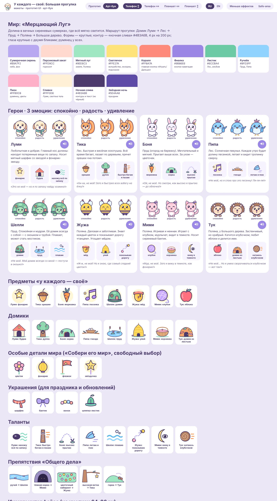

Все проектыОбщее техническое оснащение
Базовый комплект для разработки и проверки приложений.
- Компьютер Windows 10/11 и стабильный интернет.
- Git, Node.js 20+, Android Studio, Android SDK, JDK и Python 3.
- Один Android-телефон для сборки и желательно второй телефон или компьютер для сетевого теста.
- Мобильная точка доступа для проверки разных сетей.
- Единая рабочая почта, GitHub и Firebase.
- Для iOS-сборки нужен Mac с Xcode или внешний CI-сервис.
Собственный оплачиваемый сервер на первом этапе не нужен.
Дворовый футболТри режима развития
1. Офлайн
Боты, тренировка, кубки, испытания, локальный прогресс и настройки двора.
2. Игра 1 на 1
WebRTC передаёт матч напрямую между игроками, Firebase хранит только комнату и данные подключения.
3. Онлайн-турниры
Firebase хранит заявки, сетку и результаты, а сами матчи проходят через WebRTC.
Технические требования
- WebRTC DataChannel и STUN.
- Firebase Realtime Database и гостевой идентификатор.
- Комната, код приглашения, таймер, переподключение и обработка выхода.
- Для турниров — сетка на 4/8/16 участников, статусы матчей и спорный результат.
- На первом этапе только дружеские турниры: без официального рейтинга и призов.
Только офлайн
Онлайн-режим не нужен. Игра остаётся одиночным раннером с локальным прогрессом.
- Прогресс, рекорды и достижения — в localStorage.
- Android-пакет работает без интернета.
- Можно оставить только ручное «поделиться результатом» через системное меню.
- Не добавлять комнаты, аккаунты, онлайн-рейтинг и турниры.
Онлайн здесь не добавляем: он не даёт продуктовой пользы и усложняет безопасность.
Победитель JuniorТолько офлайн
Детская версия работает без сети и без публичной социальной части.
- Локальные монеты, предметы и игровой прогресс.
- Родительский шлюз и локальный сброс данных.
- Без онлайн-матчей, турниров, чата, публичных никнеймов и сбора детской статистики.
Онлайн для Junior не нужен — это снижает риски приватности и объём поддержки.
РядомОфлайн-поддержка
Базовая версия хранит дневник, прогресс историй и практики на устройстве.
- Офлайн-кэш PWA и понятные состояния без сети.
- Удаление данных в приложении.
- Без игровых соревнований, рейтингов и турниров.
- Будущие ИИ, голос, места и синхронизация — отдельный защищённый backend-контур.
Игровой онлайн-контур «Дворового футбола» не смешиваем с личными данными «Рядом».
Форсаж НебесОт макета к прототипу
Отдельный сайт Afterburn Skies остаётся рабочим местом для тестирования экранов и будущей игры.
- Ангар: выбор самолёта и быстрый старт.
- Вылет: полёт, цель, огонь, ракета и трюк.
- Результат: очки, точность, серия манёвров.
- Магазин: премиальные самолёты без pay-to-win.
У каждого — своёКонцепция и макеты: Большая прогулка
Детская игра 3+. Собачка гуляет по волшебному миру, встречает семь друзей и помогает понять, у кого что своё: орешки, морковка, песня, домик, мёд, клубок, яблоко. В конце — общий праздник.
- Пять механик: найди владельца, угадай по звуку, собери его мир, у каждого свой талант, общее дело.
- Цель прогулки в начале, карта-маршрут Домик Луми → Лес → Пруд → Поляна → Большое дерево, праздник-итог: каждый приносит то, что ребёнок о нём узнал.
- На ошибку — добрый ответ героя о своей особенности: «Это не моё, но я умею другое!»
- Только офлайн, без рекламы, покупок и сбора данных; раздел «Родителям» за шлюзом.
- Один HTML-файл, вся графика нарисована кодом (SVG) — авторство доказуемо.
- Любые телефоны и планшеты: портрет и ландшафт, safe-area, кнопки от 64 px, без проигрыша.
- 11 языков интерфейса.
Мир «Мерцающий Луг» — тёплые сиреневые сумерки, светлячки и тропинка из света. Собачка Луми и семь друзей: Тика, Боня, Пипа, Шелли, Жужа, Мими, Тук. Вся графика нарисована кодом (SVG), три эмоции у каждого героя.

Открыть интерактивные макеты → Концепция (документ) Концепция (копия здесь) Экраны и макеты
Порядок работКак запускать без своего сервера
- Сначала проверить офлайн-режимы на Android.
- Затем сделать в «Дворовом футболе» один режим 1 на 1 по приглашению.
- Проверить два браузера, две Wi-Fi-сети и мобильную сеть.
- После устойчивого матча добавить турнир на 4 участника.
- Только затем расширять до 8/16 участников и добавлять модерацию.